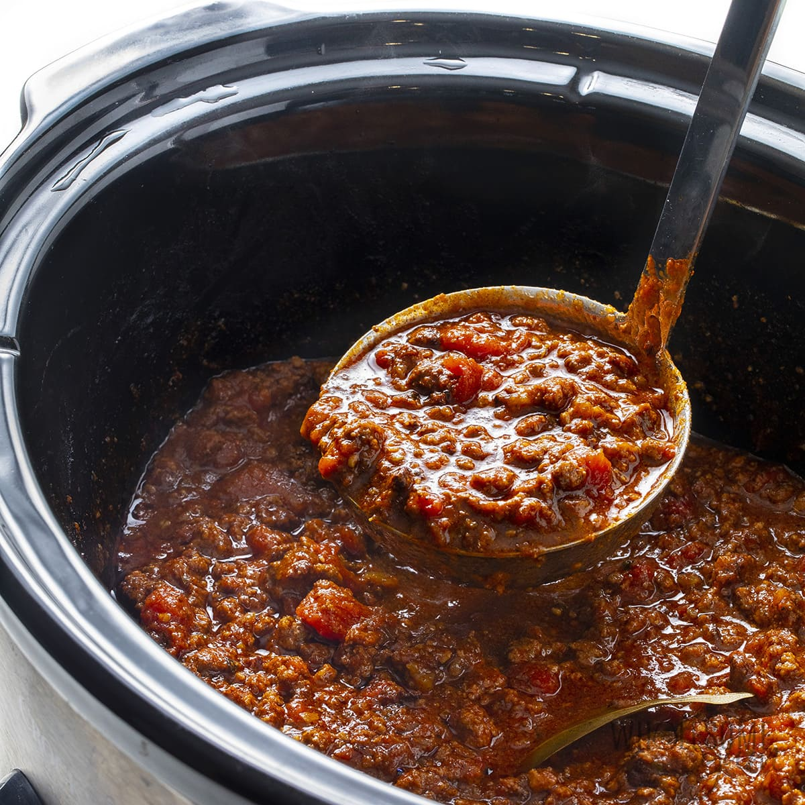

Keto Chili

Description
Incredible keto chili that can be made super easy in a crock pot full of flavour and meat!
Ingredients
- 1 Onion
- Some Garlic
- 1KG Hamburger
- 1KG Italian Sausage
- 1 Packet Taco Bell Chili Seasoning
- 1 Jar Tostana Salsa
- 1 Can Sugar-Free Tomato Sauce
- Stevia (to taste)
- Walden Farms Maple Syrup (to taste)
- 4 Cans Black Soy Beans
Steps
- Cook the onions and meat in a big pan or pot.
- Add the meat in a crock pot set to high.
- Add all the other ingredients to the crock pot and blend everything well.
- Once the chili comes to a slow boil lower the temperature to low and let simmer uncovered for 5 hours.